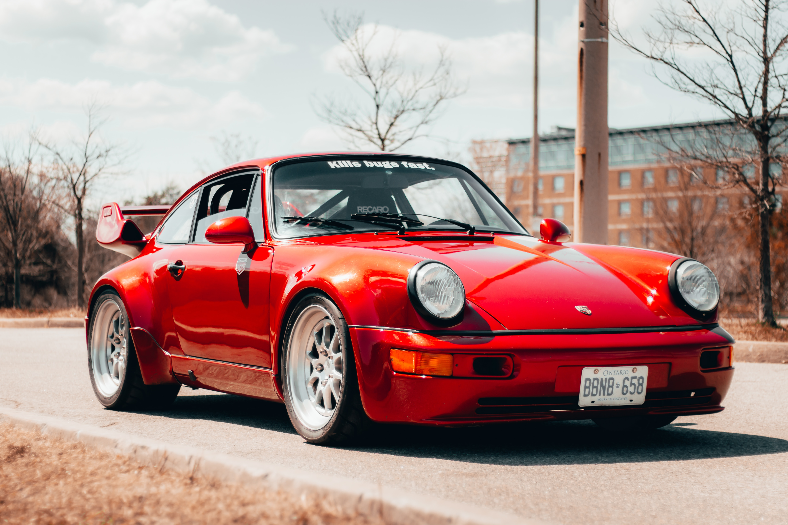
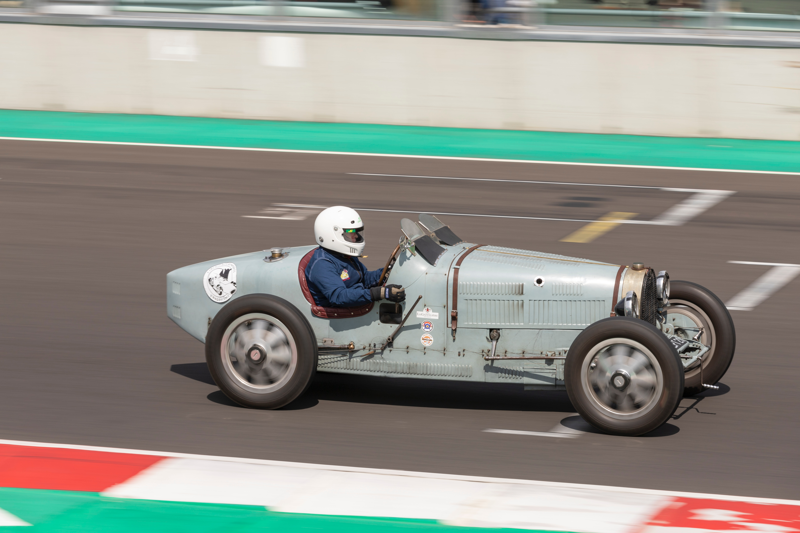

Porsche, established in 1931 by Ferdinand Porsche, is a renowned German automobile manufacturer celebrated for its luxury, high-performance vehicles. The brand gained prominence with the 1948 release of the 356, marking its entry into the sports car market. Since then, Porsche has upheld its reputation for precision engineering and cutting-edge technology.
Porsche, established in 1931 by Ferdinand Porsche, is a renowned German automobile manufacturer celebrated for its luxury, high-performance vehicles. The brand gained prominence with the 1948 release of the 356, marking its entry into the sports car market. Since then, Porsche has upheld its reputation for precision engineering and cutting-edge technology.
Porsche specializes in crafting high-performance vehicles that prioritize driving experience. Their engineering prowess, seen in unique engine configurations and advanced materials, ensures exceptional handling and efficiency. Continuous innovation in technologies like adaptive suspension and driver-assistance features further elevates Porsche's driving dynamics.
Porsche's legacy extends beyond automotive achievements, influencing the industry with its pursuit of perfection. The brand's dedication to motorsport and technological advancements sets industry benchmarks. Embracing sustainability, Porsche ventures into hybrid and electric vehicles, maintaining its performance heritage while adapting to evolving market needs. Porsche remains synonymous with blending tradition and innovation to deliver unparalleled driving pleasure.